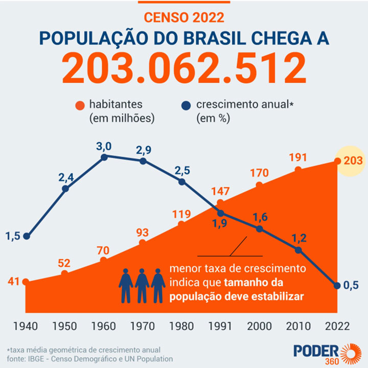

Módulo 2 | Aula 3
Construindo modelos populacionais
Crescimento populacional variável
O que acontece quando a taxa de crescimento não permanece constante ao longo do tempo? Na realidade, populações humanas raramente mantêm o mesmo ritmo de crescimento por décadas seguidas. Fatores como mudanças nas políticas de saúde, avanços na medicina, transformações econômicas e culturais podem acelerar ou desacelerar o crescimento populacional. O caso brasileiro ilustra bem essa dinâmica.
A figura a seguir foi publicada para mostrar como está o crescimento da população brasileira desde 1940 a 2020. Que processos demográficos podem explicar esse padrão? Note que, ao longo das décadas, as taxas de crescimento populacional aumentaram até alcançar um pico em 1960 e depois caíram rapidamente, e em 2022 chegaram a 0,5% de crescimento ao ano.
Vamos começar analisando a figura.

A população claramente não cresce a uma taxa constante; logo, o modelo geométrico não serve para todo o período. Ainda assim, ele foi usado para calcular as taxas de crescimento anual apresentadas na figura. Por exemplo, veja o período entre 1940 e 1950:
Nesse caso, conhecemos Pn, P0 e n, e queremos calcular a:
n = 1950 − 1940 = 10 anos
P(10) = 52 milhões
P(0) = 41 milhões
Utilizando a fórmula do modelo geométrico:
52 = 41 milhões (1+a)10
Resolvendo:
(1+a)10 = 52/41 = 1,268
(1+a) = 1,268⁽(1/10) = 1,024
a = 1,024 = 1 = 0,024 * 100 = 2,4%
Você já parou para pensar o que pode fazer a taxa de crescimento de uma população aumentar ou diminuir?
Bem, algumas possíveis hipóteses são:
pan_tool_alt CliqueToque e arraste os cards para conhecê-las.
Um modelo que represente essas entradas e saídas da população é um modelo chamado de “dinâmica demográfica” ou “populacional”, que veremos a seguir, na próxima aula